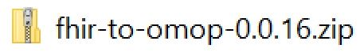
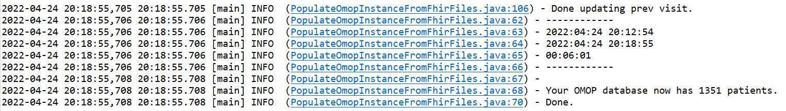
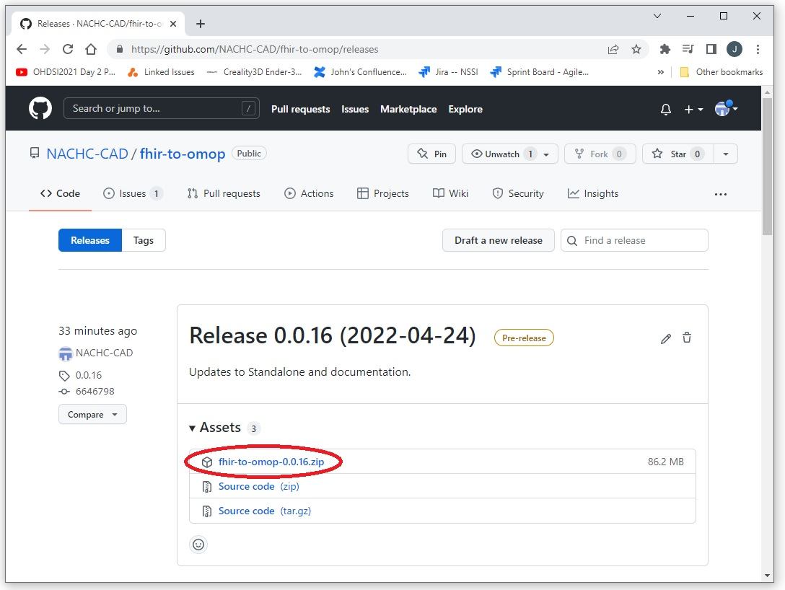
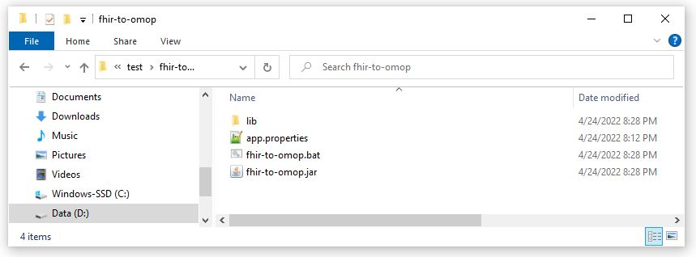

The NACHC fhir-to-omop Standalone Application
The NACHC fhir-to-omop Standalone Application is a Java application that can be run as an application
thereby avoiding most of the dependencies listed in the
Installing and First Steps page.
Everything you need to:


How to Get NACHC fhir-to-omop Standalone Application
The NACHC fhir-to-omop is packaged as a zip file with each release.
The latest version can be downloaded by going to the
releases page
and clicking on the link for the fhir-to-omop zip file link for the latest release.
(you will probably need to expand the drop-down for the Assets)

Contents of the zip file
After you've downloaded the zip, unzip the file.
The zip file contains the following:
- lib: A folder containing all of the dependencies for the application
-
app.properties:
The app.properties file that has all of the configuration information for the application.
The version of the file provided here includes everything required to create a default instnace
except for the connection information for the FHIR server will use to get patients.
- fhir-to-omop.bat: A bat file that calls the Java code. This is the bat file you will call to access the application.
- fhir-to-omop.jar The jar file that contains the fhir-to-omop Java classes.

Using the Application
The application is called by calling the bat file using the parameter for the desired action.
The download ids call allows for a second parameter that will limit the number of patient IDs downloaded by the application.
Each call has a long version of the parameter and a short version.
All of the function of the application can be seen by simply calling the bat file without any parameters.
-
fhir-to-omop.bat
Help
Display a help page that shows the available functionality.
-
fhir-to-omop.bat i
Build Your OMOP CDM Database
Instant OMOP. Create an instance of the OMOP CDM.
-
fhir-to-omop.bat ids
Get the IDs of the Patients on Your FHIR Server
Patient IDs will be stored in files in the folder specified in the app.properties file.
-
fhir-to-omop.bat d
Download Patients from Your FHIR Server
Download FHIR patients using the IDs created in the previous step.
Patient data will be written to the directory specified in the app.properties file.
Each patient will be represented as a directory containing the Patient[id]/$everything resources as a set of files.
-
fhir-to-omop.bat u
Upload Your FHIR Patitents into Your OMOP CDM Database
Patient FHIR data will be converted to OMOP CDM data and written to the database.
This includes all code lookups, mappings, key generation, etc.